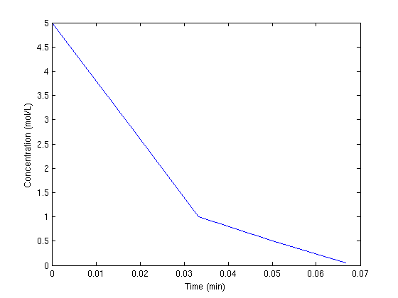

Contents
Using cmu.units in Matlab
John Kitchin
clear all; clc; close all;
Load the units package
units is a new type of object in Matlab that stores the units, enforces proper unit algebra and works with most mathematical operations in Matlab. You load the units package into a variable; by convention: u the default set of base units are the SI units.
u = cmu.units;
Simple unit algebra
the basics of unit algebra are that like units can be added and subtracted. Unlike units can be multiplied and divided. when you assign a unit to a number, it is automatically converted into the base units.
5*u.kg % a mass 5*u.lb % another mass 6*u.m/u.s % a velocity 1*u.m + 10*u.cm % this is ok, 1.1 m % 1*u.m + 1*u.s % this is not ok
5*kg 2.26796*kg 6*m/s 1.1*m
Temperature is a little special
most unit conversions are simple multiplications. Temperature conversions involve multiplication and an offset; e.g. F = C*9/5 + 32;
T = 298*u.K % Kelvin is an absolute scale Tf = 400*u.R % Rankine is an absolute scale T1 = u.degC(100) % this is 100 degC, and T1 is in Kelvin T2 = u.degF(212) % this is 212 degF, and T2 is in Kelvin % convert 32 degF to degC u.degF2C(32) %no units on the output u.degC2F(100) %no units on the output
298*K
222.222*K
373.15*K
373.15*K
ans =
0
ans =
212
displaying units
a unit object has an "as" function that can display the unit in various forms
a = 1*u.kg; a.as(u.lb) % to do an actual conversion, you divide the unit by the units you want to % convert to. sprintf('%1.2f = %1.2f lb',a,a/u.lb)
2.205*lb ans = 1.00*kg = 2.20 lb
Load the cmu.constants package
The gas constant, speed of light, etc... are stored in this package
clear all; u = cmu.units; c = cmu.constants; c.R %the gas constant%% variations of the gas constant c.R.as(u.J/u.mol/u.K) c.R.as(u.J/(u.mol*u.K)) c.R.as(u.cal/u.mol/u.K) c.R.as(u.dm^3*u.atm/u.mol/u.K) c.R.as(u.BTU/u.lbmol/u.R) c.R.as(u.ft^3*u.atm/(u.lbmol*u.R))
8.31447*m^2/s^2*kg/K/mol 8.314*J/mol/K 8.314*J/(mol*K) 1.986*cal/mol/K 0.082*dm^3*atm/mol/K 1.986*BTU/lbmol/R 0.730*ft^3*atm/(lbmol*R)
Arrays of units
t = [0 1 2 3 4]*u.s; C = [5 3 1 0.5 0.05]*u.mol/u.L; % note these concentrations are stored % internally as mol/m^3 because those are % the base SI units % we can change the units in a plot by converting them to the units we want plot(t/u.min,C/(u.mol/u.L)) xlabel('Time (min)') ylabel('Concentration (mol/L)')
units with Matlab functions
Many functions in Matlab such as ode45, ode15s, fzero, fsolve, min, max, etc... work with units. This works because we have overloaded these functions to work with units. Not all functions are overloaded though, so be careful! If you find you have lost the units, it means you used a function that was not overloaded. Please let us know about it!
little example of integrating an ode
k = 0.3/u.min; dCadt = @(t,Ca) -k*Ca; Cao = 1*u.mol/u.L; tspan = [0 10]*u.min; [t,Ca] = ode45(dCadt, tspan, Cao); plot(t,Ca/(u.mol/u.L),'ko-') %default units for Ca are mol/m^3! xlabel('Time(sec)') ylabel('Ca (mol/L)')

functions that do not work with units
functions that require dimensionless arguments (e.g. trig functions, exp, log, etc...) will usually fail if you pass a unit in. You must divide the arguments by the appropriate units to make them dimensionless
a = 5*u.mol; sin(a/u.mol)
ans = -0.9589
Alternative base units
you can specify 'SI', 'CGS' or 'American' as the base units SI/MKS: {'m','s','kg', 'K', 'mol','coul','candela'} CGS: {'cm','s','gm','K', 'mol','coul','candela'} American: {'in','s','lb','R', 'mol','coul','candela'}
u = cmu.units('American'); a = 2*u.ft a.as(u.m) % you can also specify which units are your base. Note the order of base % units must be: length, time, mass, temperature, charge, mol % and all of them must be specified. u = cmu.units('mm','min','ton','R','coul','mol','candela'); a = u.cm a.as(u.m)
24*in 0.610*m 10*mm 0.010*m
simplified units
there may be times when you need units conversion, but you only want simple numbers and not unit objects, e.g. because some Matlab function doesn't handle units. You can load the simple_units structure to get a set of conversion factors. Unit algebra is not used and units are kept track of, so you have to know what the units are.
u = cmu.unit.simple_units; a = 1*u.kg a/u.lb a/u.min
a =
0.0011
ans =
2.2046
ans =
0.0011